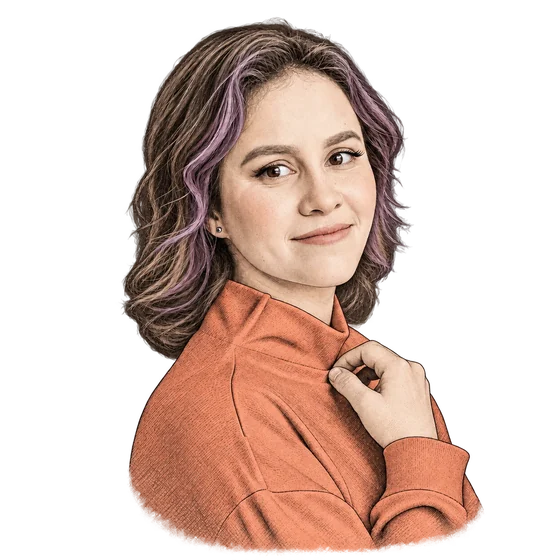
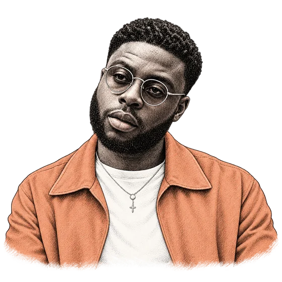
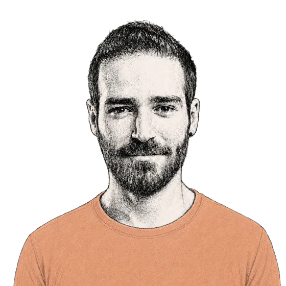

All interviews
We work together every day, but we don’t always get to know the person behind the role. In this series, colleagues talk about home, food, what they love and what makes a good life.

QA Lead
On dawn birdwatching, her grandma’s perepechi and the people who make a place home.
Read the interview
Senior Account Executive
On early starts, his mum’s cooking and a good life.
Read the interview
Solutions Engineer
On late-night creativity, dystopian futures, the Syrian dish worth the effort and why honesty matters more than being right.
Read the interview